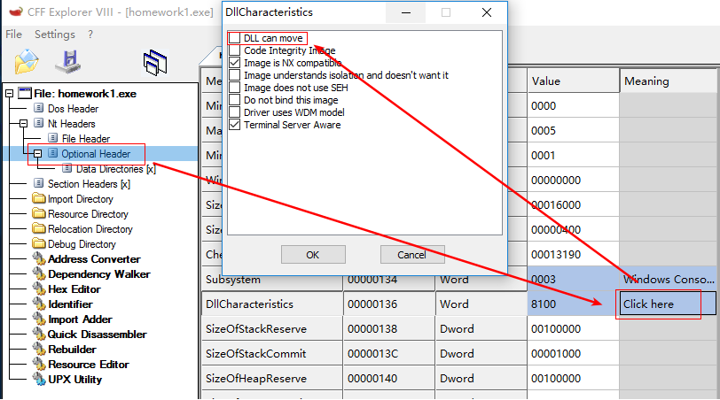
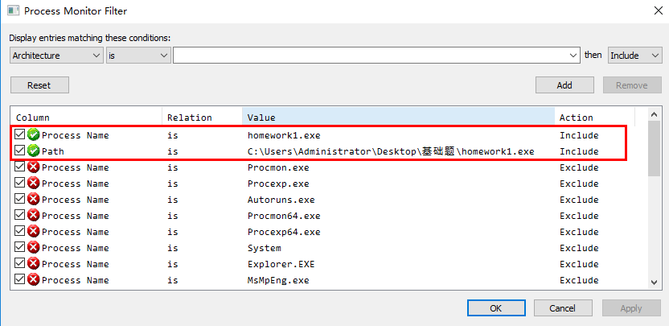
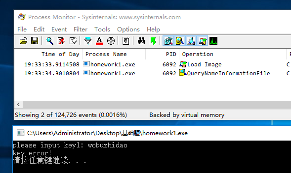
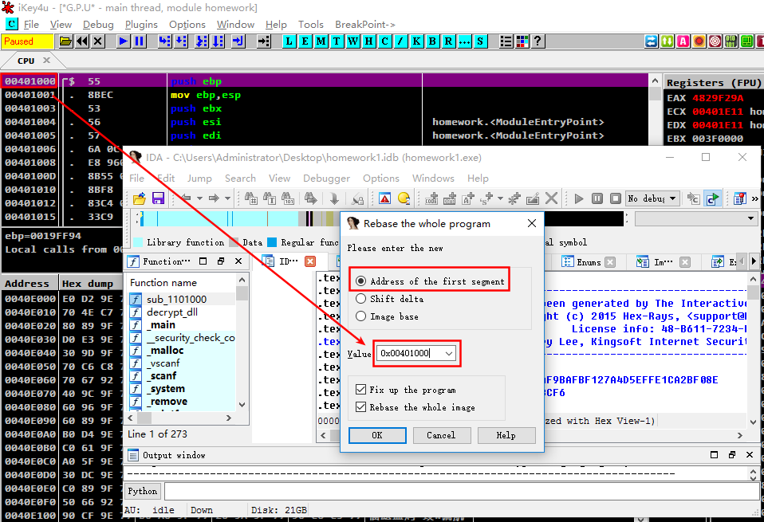
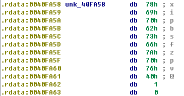
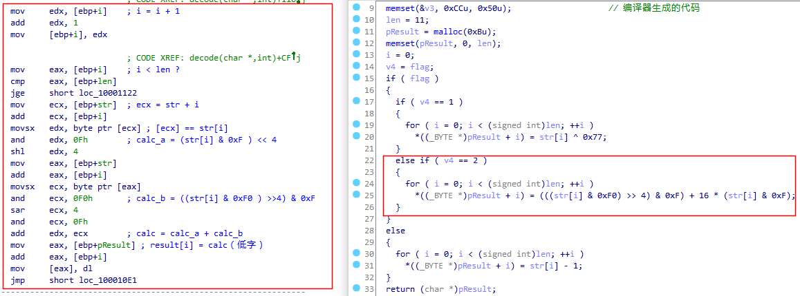
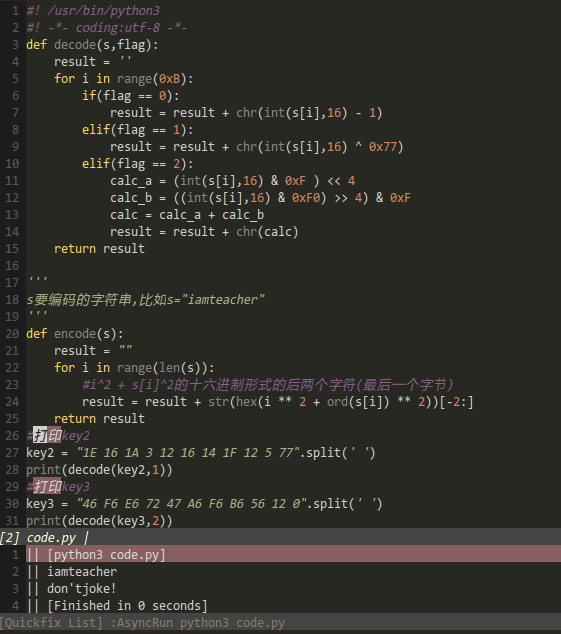

如果使用 Windows XP 虚拟机来分析程序,则完全没有 ASLR 这个问题.而我这里使用的虚拟机是 Windows 10,于是就有了 ASLR 问题.
自 Windows Vista 开始,微软引入了 ASLR 技术,这使得每次程序运行,加载的基地址都不一样 ,这导致分析会有点麻烦,所以我们需要首先禁用 ASLR.有多种方法来禁用 ASLR.
系统层面上,可以有两种方式:
在虚拟机中分析时,大可不让系统关机,这样是可行的,但是总归有那么一些不爽, 我们可以通过修改 PE 头来禁止文件基址的变化,这可借助工具 CFF Explorer 实现, 将程序载入 CFF 中后,按照下图所示,去掉文件可选头中的 DLL can move 复选框,然后覆盖原程序保存即可.
基础题里面包含有两个文件: Dll2.dll以及 homework1.exe. 先设置 procmon 的过滤条件如下以监视 homework1.exe 的行为:
然后运行 homework1.exe ,观察其行为,结果如下图2所示:
似乎没有什么特殊的行为.
将 homework1.exe 载入 OllyDbg ,以下简称 OD.同时另外拷贝一份载入 IDA . OD 用于动态分析,在 OD 动态分析代码的时候借助 IDA 来阅读反汇编代码.为了使两者协调, 我们需要首先使基地址一致,在 OD 中转到 homework1 模块,然后在汇编窗口中转到最上方, 得到模块在内存中的起始地址,然后在IDA中依次 Edit/Segments/Rebase Program ...,然后在下面图3中填入段起始地址:
这样的话就保证了 IDA 和 OD 显示的是同一地址,可以方便的使用 IDA 查看 OD 中对应位置处的汇编代码. 我们在 IDA 中打开字符串窗口,可以看到字符串 please input key1:,通过此字符串的交叉引用我们可以很快定位到关键代码的位置. 定位到关键代码后,使用 IDA 的反汇编功能,我们进入了如下主函数:
int __cdecl main(int argc, const char **argv, const char **envp)
这个主函数略微有点长,下面一段段进行分析.每一段分析我们都将得到一个 key. 也就是说,解决此题,只需要看懂此代码即可.
先看开始的代码:
01 v3 = malloc(0xBu);
02 v4 = v3;
03 *v3 = 0;
04 *(v3 + 1) = 0;
05 *(v3 + 4) = 0;
06 *(v3 + 10) = 0;
07 v5 = (&unk_40FA58 - v3);
08 v6 = 11;
09 do
10 {
11 *v3 = *(v3 + v5) - 1;
12 v3 = v3 + 1;
13 --v6;
14 }
15 while ( v6 );
[01,06] 行使用 malloc 分配了长度为 0xB字节的内存空间, 然后将其初始化为0. 简单解释一下,这里 v3 是一个指针, *v3 = 0 就是把 v3[0],v3[1],v3[2],v3[3]初始化为0了. 因为我们查看反汇编代码可以看到如下代码:
xor eax, eax mov [esi], eax
[07]行代码里的 unk_40FA58在 IDA 中我们能看到它是如图4这样子的: 
[09,15] 代码是一个while循环,我们看到 v3+v5这个表达式, 而 v5+v3 == unk_40FA58,知道了这个之后,我们就可以立即推得, 实际上这个循环是在做 v3[i] = unk_40FA58[i] - 1啊.这是一个混淆. 后面的所有分析中都是这种类似的混淆.总的来说这段代码做了这样的事情:
开辟一个数组 v3 并初始化为0,然后将内置字符串 xipbsfzpv@ 中的每个字符减1赋予 v3.
接着的一段代码如下:
01 v7 = malloc(0xCu);
02 v8 = 0;
03 v9 = v4 - v7;
04 do
05 {
06 v10 = &v7[v8];
07 v11 = v8 * v8 + *(&v7[v8] + v9) * *(&v7[v8] + v9);
08 ++v8;
09 *v10 = v11;
10 }
11 while ( v8 < 11 );
12 v7[v8] = 0;
这段主要处理的是 v7[i] = i2 + v4[i]2, 其中 v4 == v3 == unk_40FA58 .当然了,v[7]是一个字符串数组,我们看汇编代码就会知道, 平方和取最后一个字节赋予v7[i],这个我很快就用python代码来再进一步说明.
key1的最后一部分代码如下:
01 printf("please input key1: ");
02 scanf("%30s", input_str_a);
03 mem = malloc(0xCu);
04 i = 0;
05 diff = (input_str_a - mem);
06 arr = mem;
07 while ( 1 )
08 {
09 *arr = i * i;
10 // arr[diff] == *(arr+diff) == *(mem+diff) == input_str_a
11 *arr = i * i + arr[diff] * arr[diff];
12 ++i;
13 // arr基址前移1
14 ++arr;
15 if ( i >= 11 )
16 break;
17 diff = (input_str_a - mem);
18 }
19 mem[i] = 0;
20 if ( !strcmp(v7, mem) )
[07,18]又是一个循环,算法是一样的,只不过这里是对用户输入的字符串进行编码. v7 这里就是计算出来的 key1. 动态调试是很容易得到 key1的,不过我们也可以手动编码计算,使用 Pyhton 来求解:
#! /usr/bin/python3
#! -*- coding:utf-8 -*-
#========================================
#内置秘钥"xipbsfzpv@"的加密算法
'''
内置硬编码"xipbsfzpv@",循环处理每个字符,每个字符减一,
再乘方,再加上索引的平方,取所得结果的十六进制形式的后两个字符.
最后一个字符为NULL字符.
字符串长度为0xB(包括末尾NULL字符).
'''
hardcode_str = "xipbsfzpv@"
decode_str = ''.join([chr(ord(ch) - 1) for ch in hardcode_str])
print(decode_str) #秘钥
for i in range(0xB):
chcode = 0 if i == 0xB - 1 else ord(decode_str[i]) ** 2
print(str(hex(i ** 2 + chcode))[-2:],end=' ')
print()
#========================================
#输入字符串加密算法
#input_str = "0123456789A" #测试字符串
#for i in range(len(input_str)):
# print(str(hex(i ** 2 + ord(input_str[i]) ** 2))[-2:])
代码第一行输出的解密后的密钥,然后是对密钥加密后的十六进制字串值, 输入的字符串将会用同样的加密方法加密后与该十六进制字串进行比较, 如果相同,则 key1 正确.
这里, key1 为 whoareyou?
如果 key1 正确,也就是上面的 if ( !strcmp(v7, mem) ) 语句不成立, 将会开始 key2 和 key3的检测,这两问放在一起说.首先是解密一个 dll,如下:
01 dll2 = fopen("Dll2.dll", "rb");
02 dllu = fopen("DllU.dll", "wb");
03 if ( dll2 )
04 decrypt_dll(dllu, dll2);
05 hDllU = LoadLibraryA("DllU.dll");
06 v19 = hDllU;
07 hLibModule = hDllU;
自带的 DLL 是 Dll2.dll, 使用函数 decrypt_dll(dllu,dll2)来解压, 生成的 DLL 为 DllU.dll. 这个 decrypt_dll 函数主要部分如下:
01 do
02 {
03 v2 = fread(v4, 1u, 0x400u, dll2);
04 for ( i = 0; i < v2; ++i )
05 --v4[i];
06 fwrite(v4, 1u, v2, dllu);
07 }
08 while ( v2 > 0 );
读取 Dll2.dll ,每次一个字节,对读出的每个字节减去1,然后写到 Dllu.dll.
解密 DLL 后使用 GetProcAddress 来获取 Dllu 中的函数地址,主要用的到了一个导出函数 decode(string str,int flag).主函数代码如下:
01 if ( hDllU )
02 {
03 decode_a = GetProcAddress(hDllU, "?decode@@YAPADPADH@Z");
04 decode_aa = decode_a;
05 if ( decode_a )
06 {
07 v22 = (decode_a)(&unk_110FA64, 1);
08 enc_key2 = encrypt(v22);
09 v24 = decode_aa(&unk_110FA70, 2);
10 enc_key3 = encrypt(v24);
11 printf("please input key2: ");
12 mem_key2 = malloc(0xBu);
13 scanf("%11s", mem_key2);
14 enc_input_key2 = encrypt(mem_key2);
15 printf("please input key3: ");
16 mem_key3 = malloc(0xBu);
17 scanf("%11s", mem_key3);
18 enc_input_key3 = encrypt(mem_key3);
19 if ( !strcmp(enc_key2, enc_input_key2) && !strcmp(enc_key3, enc_input_key3) )
20 {
21 printf("You Win!\n");
22 v19 = hLibModule;
23 }
24 else
25 {
26 printf("You Failed!\n");
27 v19 = hLibModule;
28 }
29 }
30 }
如上代码段所示, [03,05] 是得到了 decode函数, 然后 [07,08]对内置密钥 unk_110FA64解码, 再用 encrypt对解码后的字符串(这个就是key)编码,得到一个编码 enc_key2, 同样的方法得到另一个编码 enc_key3.接着就是让用户输入两个key, 对key使用 encryp编码一下,再分别和 enc_key2,enc_key3比较. 因此,我们实际上不必知道 encrypt到底是怎样的,我们只需要知道 decode是怎样的即可. decode函数如下:
01 char decode(char *str, int flag)
02 {
03 memset(&v3, 0xCCu, 0x50u); // 编译器生成的代码
04 v7 = 11;
05 pResult = malloc(0xBu);
06 memset(pResult, 0, v7);
07 i = 0;
08 v4 = flag;
09 if ( flag )
10 {
11 if ( v4 == 1 )
12 {
13 for ( i = 0; i < v7; ++i )
14 *(pResult + i) = str[i] ^ 0x77;
15 }
16 else if ( v4 == 2 )
17 {
18 for ( i = 0; i < v7; ++i )
19 *(pResult + i) = (((str[i] & 0xF0) >> 4) & 0xF) + 16 * (str[i] & 0xF);
20 }
21 }
22 else
23 {
24 for ( i = 0; i < v7; ++i )
25 *(pResult + i) = str[i] - 1;
26 }
27 return pResult;
28 }
该函数会根据 flag 的值(0,1 或 2)来对字符串进行解码,这个反编译的结果,在结构上是很清楚了, 但是 IDA Pro在反编译的细节上会出现很多问题.比如对于 flag == 2 的反编译就是错误百出, 下图5是我手动注释的反汇编以及 IDA Pro的反编译对比图:
通过参考 IDA Pro宏观上的反编译,加上对汇编代码的理解,可以写出如下代码:
#! /usr/bin/python3
#! -*- coding:utf-8 -*-
def decode(s,flag):
result = ''
for i in range(0xB):
if(flag == 0):
result = result + chr(int(s[i],16) - 1)
elif(flag == 1):
result = result + chr(int(s[i],16) ^ 0x77)
elif(flag == 2):
calc_a = (int(s[i],16) & 0xF ) << 4
calc_b = ((int(s[i],16) & 0xF0) >> 4) & 0xF
calc = calc_a + calc_b
result = result + chr(calc)
return result
'''
s要编码的字符串,比如s="iamteacher"
'''
def encode(s):
result = ""
for i in range(len(s)):
#i^2 + s[i]^2的十六进制形式的后两个字符(最后一个字节)
result = result + str(hex(i ** 2 + ord(s[i]) ** 2))[-2:]
return result
#打印key2
key2 = "1E 16 1A 3 12 16 14 1F 12 5 77".split(' ')
print(decode(key2,1))
#打印key3
key3 = "46 F6 E6 72 47 A6 F6 B6 56 12 0".split(' ')
print(decode(key3,2))
代码10中,可以看到有两个函数,一个是decode,对应于decode函数,一个是encode 函数,对应于encrpt函数.当然encrypt函数我们实际是不需要写出就可以计算出 key 值的. 运行上述代码就可以给出 key2 和 key3 了,如下图6所示:
到此为止,我们已经求解出了 key2:iamteacher 以及 key3: dont'tjoke!